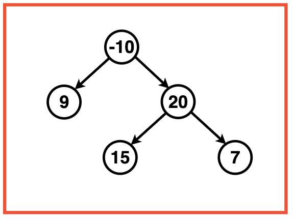
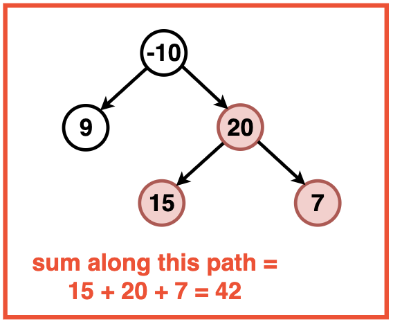
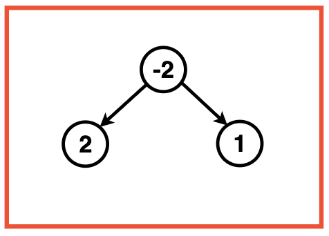
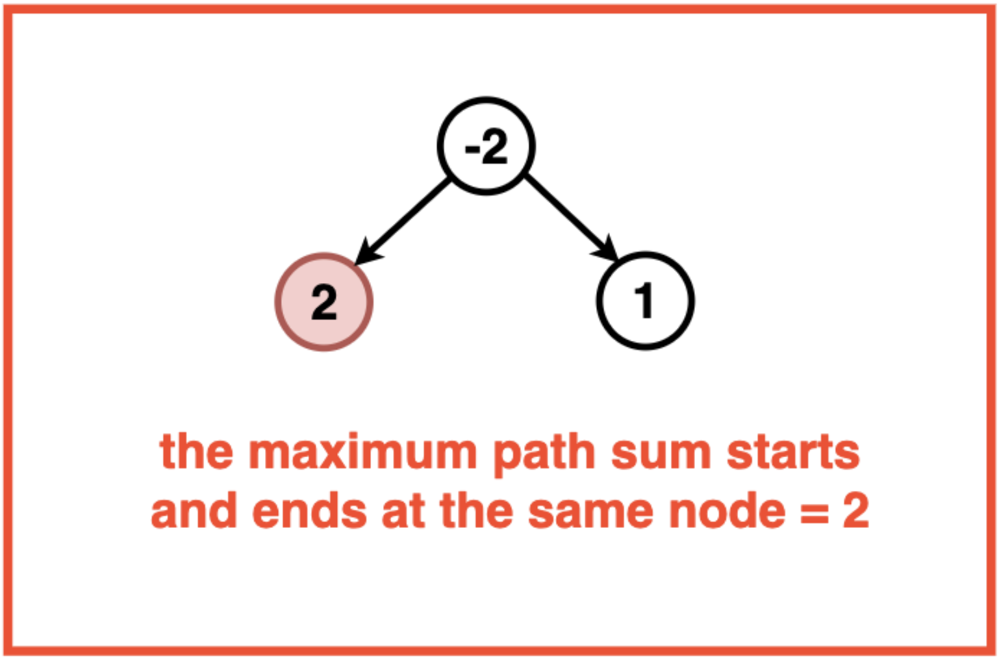
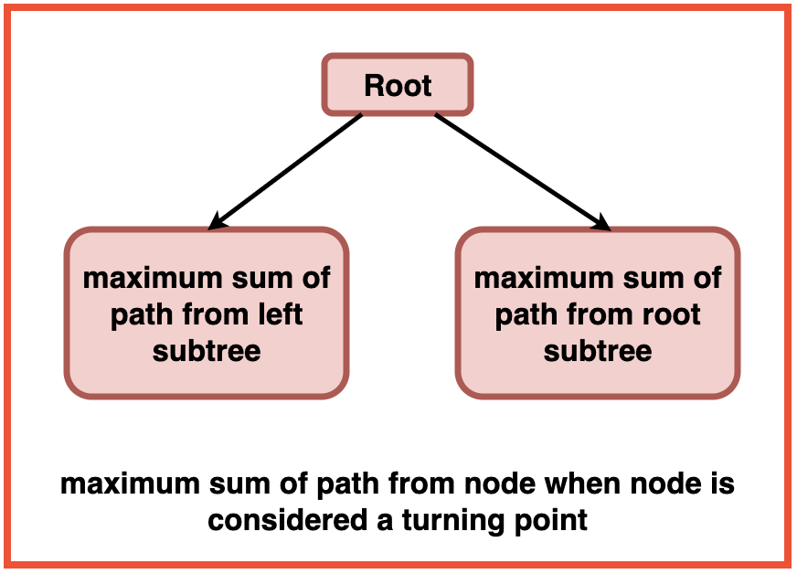
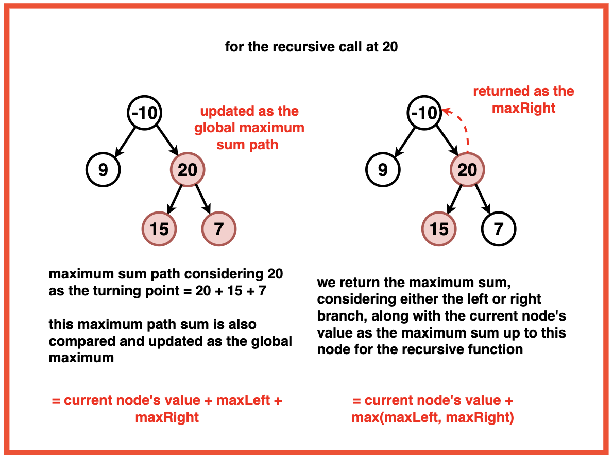
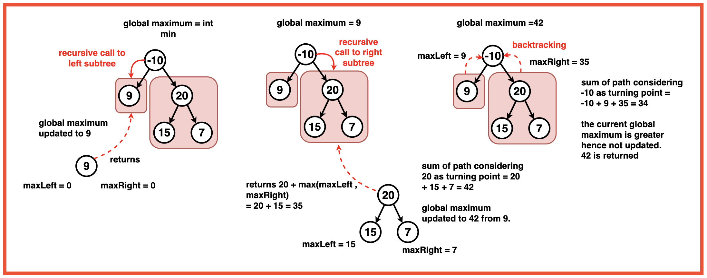
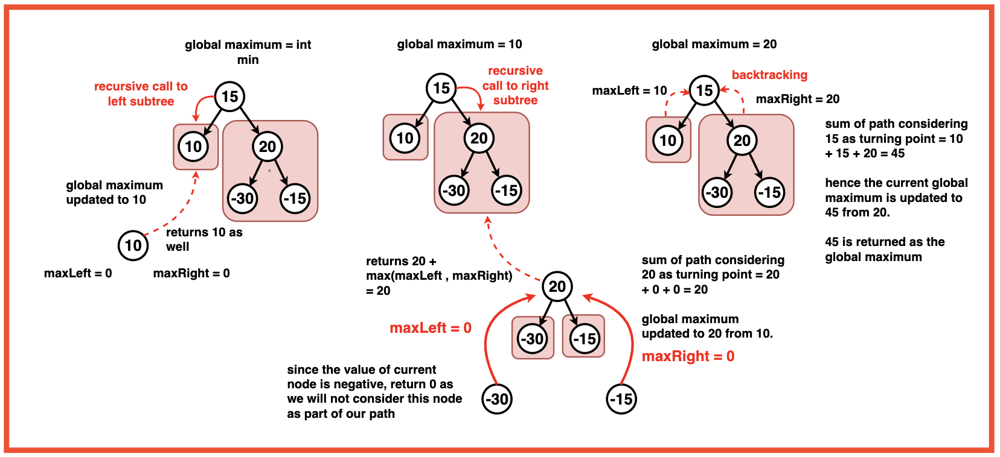

Problem Statement: Given a Binary Tree, determine the maximum sum achievable along any path within the tree.
A path in a binary tree is defined as a sequence of nodes where each pair of adjacent nodes is connected by an edge. Nodes can only appear once in the sequence, and the path is not required to start from the root.
Identify and compute the maximum sum possible along any path within the given binary tree.
Examples
Example 1:Input:Binary Tree: -10 9 20 -1 -1 15 7Output: 42Explanation: Out of all the paths possible in the Binary Tree, 15 -> 20 -> 7 has the greatest sum ie. 42.Example 2:Input:Binary Tree: -2 2 1
Output : 2Explanation: Out of all the paths possible in the Binary Tree, a path starting and ending at the node with value 2 has the greatest sum ie. 2.
Disclaimer: Don’t jump directly to the solution, try it out
yourself first.
Optimal Approach
Algorithm / Intuition
To find the diameter of a binary tree, we can think of every node as a potential `Curving Point` of the path along which we find the sum.
The maximum sum of a path through a turning point (like a curve) can be found by adding the maximum sum achievable in the left subtree, the right subtree, and the value of the turning point.

We can recursively traverse the tree, considering each node as a potential turning point and storing the maximum value (our final answer) in a reference variable.
The recursive function should be defined in such a way that we consider both the possibilities:
When the current node is the turning point and in this scenario we calculate the maximum path sum taking into sum contributions from both the left and right subtrees along with the value of the current node.
When the current node is not the turning point, we consider only the left or the right subtree. The maximum of the two is returned as the maximum path sum of that subtree.
Base Case: When the current node is null which indicates the end of a path or a lead node, we return the maximum path sum as 0.
Recursive Function:
Calculate the maximum path sum for the left and right subtrees by making recursive calls to the left and right child of the current node.
Calculate the maximum path sum when the current node serves as the turning point: Maximum Path Sum when Current Node is Turning Point = Maximum Path Sum of Left Subtree + Maximum Path Sum of Right Subtree + Current Value of Node
Update the overall maximum path sum (maxi) by considering the sum of the current node and the left and right subtree sums.
Return the maximum sum considering only one branch (either left or right) along with the value of the current node as the maximum sum up until this node.

Algorithm:
Step 1: Initialise the variable maxi to the minimum possible integer value. This ensures that the algorithm correctly updates maxi with the first encountered valid path sum (even if its negative) and subsequently updates it whenever a larger path sum is found.
Step 2: Call the recursive function `findMaxPathSum` with the root of the binary tree and the reference parameter maxi.
Step 3: Base case: If the current node is null, return 0.
Step 4: Calculate the maximum path sum for the left and right subtree using recursion.
Step 5: Update the overall maximum path sum (maxi) by considering the sum of the left and right subtree paths plus the current node's value.
This represents the sum of the path that includes the current node. This sum is used to update the overall maximum path sum (maxi) when the current node serves as the turning point in the path.

Step 6: Return the maximum sum considering only one branch (either left or right) along with the current node.
This represents the maximum sum considering only one branch (either left or right) along with the current node. This value is returned by the recursive function to contribute to the calculation of the maximum path sum in the binary tree. Case Considering Negative Leaf Nodes:

Code
#include <iostream>
#include <algorithm>
#include <climits>
using namespace std;
// Node structure for the binary tree
struct Node {
int data;
Node* left;
Node* right;
// Constructor to initialize
// the node with a value
Node(int val) : data(val), left(nullptr), right(nullptr) {}
};
class Solution {
public:
// Recursive function to find the maximum path sum
// or a given subtree rooted at 'root'
// The variable 'maxi' is a reference parameter
// updated to store the maximum path sum encountered
int findMaxPathSum(Node* root, int &maxi) {
// Base case: If the current node is null, return 0
if (root == nullptr) {
return 0;
}
// Calculate the maximum path sum
// for the left and right subtrees
int leftMaxPath = max(0, findMaxPathSum(root->left, maxi));
int rightMaxPath = max(0, findMaxPathSum(root->right, maxi));
// Update the overall maximum
// path sum including the current node
maxi = max(maxi, leftMaxPath + rightMaxPath + root->data);
// Return the maximum sum considering
// only one branch (either left or right)
// along with the current node
return max(leftMaxPath, rightMaxPath) + root->data;
}
// Function to find the maximum
// path sum for the entire binary tree
int maxPathSum(Node* root) {
// Initialize maxi to the
// minimum possible integer value
int maxi = INT_MIN;
// Call the recursive function to
// find the maximum path sum
findMaxPathSum(root, maxi);
// Return the final maximum path sum
return maxi;
}
};
int main() {
// Creating a sample binary tree
Node* root = new Node(1);
root->left = new Node(2);
root->right = new Node(3);
root->left->left = new Node(4);
root->left->right = new Node(5);
root->left->right->right = new Node(6);
root->left->right->right->right = new Node(7);
// Creating an instance of the Solution class
Solution solution;
// Finding and printing the maximum path sum
int maxPathSum = solution.maxPathSum(root);
cout << "Maximum Path Sum: " << maxPathSum << endl;
return 0;
}
// Importing necessary packages
import java.util.*;
// Node structure for the binary tree
class Node {
int data;
Node left;
Node right;
// Constructor to initialize
// the node with a value
Node(int val) {
data = val;
left = null;
right = null;
}
}
public class Solution {
// Recursive function to find the maximum path sum
// for a given subtree rooted at 'root'
// The variable 'maxi' is a reference parameter
// updated to store the maximum path sum encountered
int findMaxPathSum(Node root, int[] maxi) {
// Base case: If the current node is null, return 0
if (root == null) {
return 0;
}
// Calculate the maximum path sum
// for the left and right subtrees
int leftMaxPath = Math.max(0, findMaxPathSum(root.left, maxi));
int rightMaxPath = Math.max(0, findMaxPathSum(root.right, maxi));
// Update the overall maximum
// path sum including the current node
maxi[0] = Math.max(maxi[0], leftMaxPath + rightMaxPath + root.data);
// Return the maximum sum considering
// only one branch (either left or right)
// along with the current node
return Math.max(leftMaxPath, rightMaxPath) + root.data;
}
// Function to find the maximum
// path sum for the entire binary tree
int maxPathSum(Node root) {
// Initialize maxi to the
// minimum possible integer value
int[] maxi = {Integer.MIN_VALUE};
// Call the recursive function to
// find the maximum path sum
findMaxPathSum(root, maxi);
// Return the final maximum path sum
return maxi[0];
}
public static void main(String[] args) {
// Creating a sample binary tree
Node root = new Node(1);
root.left = new Node(2);
root.right = new Node(3);
root.left.left = new Node(4);
root.left.right = new Node(5);
root.left.right.right = new Node(6);
root.left.right.right.right = new Node(7);
// Creating an instance of the Solution class
Solution solution = new Solution();
// Finding and printing the maximum path sum
int maxPathSum = solution.maxPathSum(root);
System.out.println("Maximum Path Sum: " + maxPathSum);
}
}
class Node:
def __init__(self, val):
# Constructor to initialize
# the node with a value
self.data = val
self.left = None
self.right = None
class Solution:
def findMaxPathSum(self, root, maxi):
# Recursive function to find the maximum path sum
# for a given subtree rooted at 'root'
# The variable 'maxi' is a reference parameter
# updated to store the maximum path sum encountered
# Base case: If the current node is None, return 0
if root is None:
return 0
# Calculate the maximum path sum
# for the left and right subtrees
leftMaxPath = max(0, self.findMaxPathSum(root.left, maxi))
rightMaxPath = max(0, self.findMaxPathSum(root.right, maxi))
# Update the overall maximum
# path sum including the current node
maxi[0] = max(maxi[0], leftMaxPath + rightMaxPath + root.data)
# Return the maximum sum considering
# only one branch (either left or right)
# along with the current node
return max(leftMaxPath, rightMaxPath) + root.data
def maxPathSum(self, root):
# Function to find the maximum
# path sum for the entire binary tree
# Initialize maxi to the
# minimum possible integer value
maxi = [float('-inf')]
# Call the recursive function to
# find the maximum path sum
self.findMaxPathSum(root, maxi)
# Return the final maximum path sum
return maxi[0]
# Creating a sample binary tree
root = Node(1)
root.left = Node(2)
root.right = Node(3)
root.left.left = Node(4)
root.left.right = Node(5)
root.left.right.right = Node(6)
root.left.right.right.right = Node(7)
# Creating an instance of the Solution class
solution = Solution()
# Finding and printing the maximum path sum
maxPathSum = solution.maxPathSum(root)
print("Maximum Path Sum:", maxPathSum)
// Node structure for the binary tree
class Node {
constructor(val) {
this.data = val;
this.left = null;
this.right = null;
}
}
class Solution {
// Recursive function to find the maximum path sum
// for a given subtree rooted at 'root'
// The variable 'maxi' is a reference parameter
// updated to store the maximum path sum encountered
findMaxPathSum(root, maxi) {
// Base case: If the current node is null, return 0
if (root === null) {
return 0;
}
// Calculate the maximum path sum
// for the left and right subtrees
const leftMaxPath = Math.max(0, this.findMaxPathSum(root.left, maxi));
const rightMaxPath = Math.max(0, this.findMaxPathSum(root.right, maxi));
// Update the overall maximum
// path sum including the current node
maxi[0] = Math.max(maxi[0], leftMaxPath + rightMaxPath + root.data);
// Return the maximum sum considering
// only one branch (either left or right)
// along with the current node
return Math.max(leftMaxPath, rightMaxPath) + root.data;
}
// Function to find the maximum
// path sum for the entire binary tree
maxPathSum(root) {
// Initialize maxi to the
// minimum possible integer value
const maxi = [Number.MIN_SAFE_INTEGER];
// Call the recursive function to
// find the maximum path sum
this.findMaxPathSum(root, maxi);
// Return the final maximum path sum
return maxi[0];
}
}
// Creating a sample binary tree
const root = new Node(1);
root.left = new Node(2);
root.right = new Node(3);
root.left.left = new Node(4);
root.left.right = new Node(5);
root.left.right.right = new Node(6);
root.left.right.right.right = new Node(7);
// Creating an instance of the Solution class
const solution = new Solution();
// Finding and printing the maximum path sum
const maxPathSum = solution.maxPathSum(root);
console.log("Maximum Path Sum: " + maxPathSum);
Output
Maximum Path Sum: 24
Complexity Analysis
Time Complexity: O(N) where N is the number of nodes in the Binary Tree. This complexity arises from visiting each node exactly once during the recursive traversal.
Space Complexity: O(1) as no additional space or data structures is created that is proportional to the input size of the tree. O(H) Recursive Stack Auxiliary Space : The recursion stack space is determined by the maximum depth of the recursion, which is the height of the binary tree denoted as H. In the balanced case it is log2N and in the worst case its N.
Video Explanation
Special thanks to Gauri Tomar for contributing to this article on takeUforward. If you also wish to share your knowledge with the takeUforward fam, please check out this article